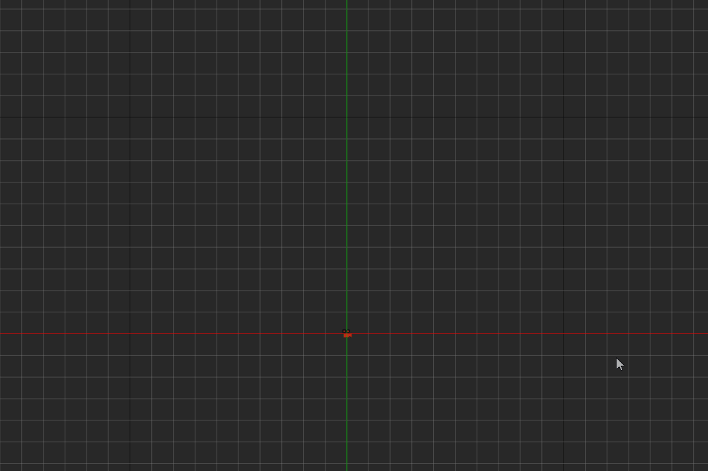
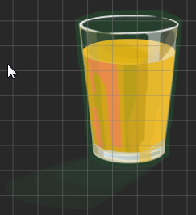
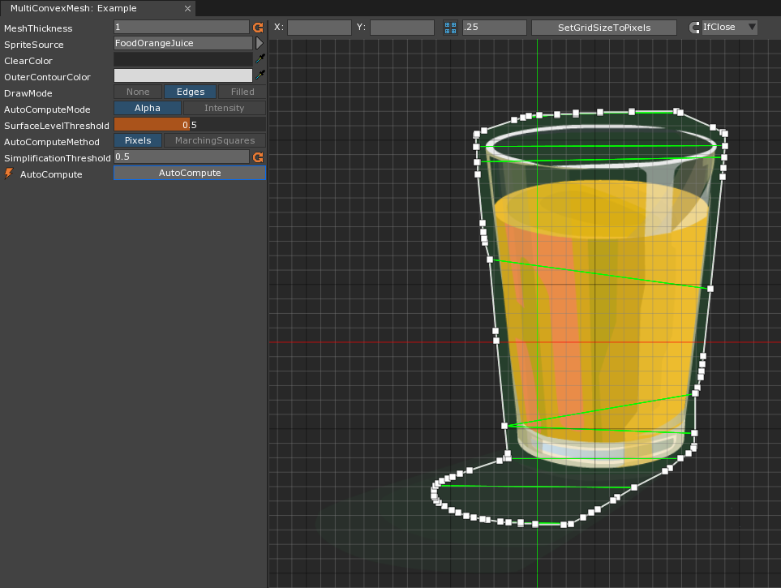
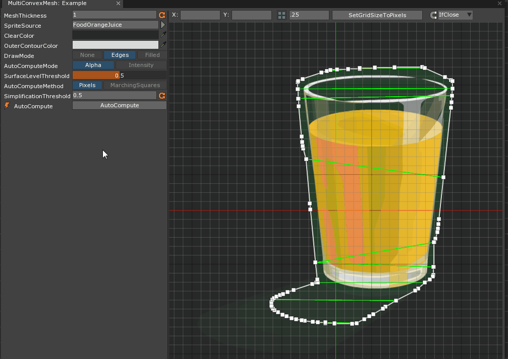
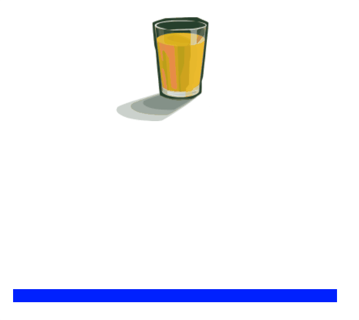

MultiConvexMesh Editor
The MultiConvexMesh Editor is a tool that allows the user to create a MultiConvexMesh Resource to use as the Mesh in a MultiConvexMeshCollilder. The Editor provides a number of different methods for creating the Mesh allowing the user a great of customizability.
Common Uses
- Creating a
MultiConvexMeshfor complex two-dimensional sprites where precise collision boundaries are needed.
Using the MultiConvexMesh Editor
The following section will be split up into two main sections: the In-Editor properties and methods of the MultiConvexMesh Editor and creating a MultiConvexMesh using the Editor.
In-Editor Properties and Methods
Properties and Methods to the Left of the Editor View
MeshThickness :Real- This property determines the length the Mesh is extended in the z-axis.
SpriteSource :SpriteSource- This property sets the base SpriteSource that the Mesh is being created for. It is used for reference and Auto-Computing.
ClearColor :Real4- The color of the Editor window’s background.
OuterContourColor :Real4- The color of the outer edges (the contour line) of the current shape of the MultiConvexMesh being created.
DrawMode :MultiConvexMeshDrawMode- This property sets the DrawMode for the MultiConvexMesh currently being created. Options include:
- None - Removes all internal coloring
- Edges - Only shows the internal edges of the polygons of the MultiConvexMesh
- Filled - Shows the combined area of the polygons of the MultiConvexMesh
- This property sets the DrawMode for the MultiConvexMesh currently being created. Options include:
AutoComputeMode :AutoComputeMode- This property sets the mode for auto-computing the MultiConvexMesh. Options include:
- Alpha - Uses alpha values of the SpriteSource to compute where the vertices for the MultiConvexMesh should be.
- Intensity - Uses the color intensity values (derived from a comparison of RGB values) of the SpriteSource to compute where the vertices for the MultiConvexMesh should be.
- This property sets the mode for auto-computing the MultiConvexMesh. Options include:
SurfaceLevelThreshold :Real- This propertysets the value that defines how much the Alpha/Intensity affects the Auto-Compute process. Value ranges from 0.0 - 1.0.
AutoComputeMethod :AutoComputeMethod- This property sets the method for auto-computing the MultiConvexMesh. Options include:
- Pixels - Uses pixel position to the perform the auto-computing process.
- MarchingSquares - Uses the Marching Squares algorithm to perform the auto-computing process.
- This property sets the method for auto-computing the MultiConvexMesh. Options include:
SimplificationThreshold :Real- This property determines how close any vertex can be from another
AutoCompute()- This method performs the calculations to generate a MultiConvexMesh based on the parameters defined above.
Properties and Methods Above the Editor View
X :Real- This property sets the X position of the currently selected vertex.
Y :Real- This property sets the Y position of the currently selected vertex.
-
- This property toggles the grid and determines the size of each grid square
SetGridSizeToPixels()- This method sets the grid size to be the same as the pixels of the current SpriteSource
Snapping- This property defines whether or not a selected vertex will snap to the closest grid vertex. Options include:
- None - The selected vertex will not snap to a grid vertex
- IfClose - The selected vertex will only snap to a grid vertex if it is close enough to that the grid vertex
- Always - The selected vertex will always snap to the closest grid vertex
- This property defines whether or not a selected vertex will snap to the closest grid vertex. Options include:
Using the MultiConvexMesh Editor
Adding a MultiConvexMesh Resource
To add a new MultiConvexMesh Resource, use the Add Resource window.
When the Resource is created, the MultiConvexMesh Editor window will automatically open, like so:

Editing the MultiConvexMesh Resource
The first thing one needs when making a new MultiConvexMesh is a SpriteSource to use as the base onto which the Mesh is created. To show how the Editor parameters may be used to customize the Mesh, the following SpriteSource will be used:

This particular SpriteSource has a very high resolution, so when it is selected as the base SpriteSource, the grid properties will need to be adjusted to see the entire image, like so:

With the rest of the parameters still set to their default value, the MultiConvexMesh that will be created looks like this:

As can be seen, the entire glass is covered and about half of the shadow projected by the glass. To include the rest of the shadow within the Mesh, the property to change is SurfaceThreshold. As the value of SurfaceThreshold is lowered–and Alpha is selcted as the AutoComputeMode–other parts of the SpriteSource that have a lower alpha value will be included, as seen here:

Now the entire shadow has been included in the resulting Mesh. As can be seen in the following demonstration, when using the MultiConvexMesh just created as the Mesh for the MultiConvexMeshCollider, it does provide collision along the boundaries auto-computed by the Editor:
